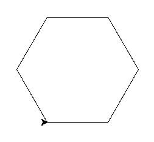
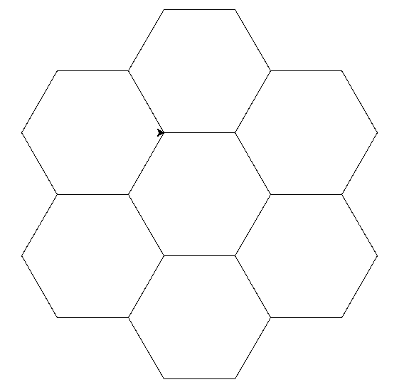

В программировании часто приходится встречаться с достаточно сложными задачами, а, как известно, одна из характерных черт программистов — ленивость. Расправившись с трудностью один раз, они не хотят делать это вновь. Также тебе понадобится что-то, с помощью чего можно разбивать задачи на маленькие и независимые друг от друга кусочки, чтобы сфокусировать свои усилия над теми из них, которые тебе нужны.
Функции – один из способов в Python выразить эту абстракцию. В качестве примера рассмотрим turtle.reset(). reset – это функция, которая вызывает нашу черепашку (turtle) для выполнения некоторых действий, а именно:
Очищение доски для рисования.
Возвращение ширины и цвета в исходное состояние.
Возвращение черепашки в исходное положение
Но так как весь код заключён в функцию, нам не нужно беспокоиться о деталях. Мы просто вызываем её.
Итак — как же написать её?
Функции в Python могут быть определены ключевым словом def:
def line_without_moving():
turtle.forward(50)
turtle.backward(50)
Определённая нами функция называется line_without_moving и она является абстракцией для двух шагов - движения вперёд и движения назад.
Чтобы использовать её (или, как обычно говорят “вызвать её”), напиши её имя и круглые скобки сразу за ним:
line_without_moving()
turtle.right(90)
line_without_moving()
turtle.right(90)
line_without_moving()
turtle.right(90)
line_without_moving()
Мы можем написать больше функций, чтобы избавиться от некоторых повторений:
def star_arm():
line_without_moving()
turtle.right(360 / 5)
for _ in range(5):
star_arm()
Важно
В Python используются отступы из пробелов/табуляций для идентификации блоков кода, которые связаны друг с другом. Блок в Python’е (как показанное выше определение функции) должен иметь двоеточие в конце строки, а последующие команды – отступы (обычно, размером в 4 пробела). Блок заканчивается первой линией без отступа в начале строки.
Это отличается от многих других языков программирования, в которых для определения связанных блоков кода используются специальные символы (такие как фигурные скобки {})
Никогда не используй табуляцию для выделения своих блоков, только пробелы. Ты можешь – и должен – настроить свой редактор, чтобы тот вставлял 4 пробела, когда ты нажимаешь клавишу Tab
Напиши функцию для рисования квадрата. Можешь ли ты использовать эту функцию для улучшения программы для рисования повёрнутых квадратов? Если ты внедришь в программу функции, с ней будет легче экспериментировать?
def tilted_square():
turtle.left(20) # now we can change the angle only here
for _ in range(4):
turtle.forward(50)
turtle.left(90)
tilted_square()
tilted_square()
tilted_square()
# bonus: you could have a separate function for drawing a square,
# which might be useful later:
def square():
for _ in range(4):
turtle.forward(50)
turtle.left(90)
def tilted_square():
turtle.left(20)
square()
# etc
Напишите функцию для рисования шестиугольника
Теперь комбинируй эту функцию, чтобы нарисовать соты. Просто сделай однослойную картинку, как эта:
Give it a good go!
Подсказка
Убедись в том, что функция рисования шестиугольника возвращает черепашку в исходную точку.
def hexagon():
for _ in range(6):
turtle.forward(100)
turtle.left(60)
for _ in range (6):
hexagon()
turtle.forward(100)
turtle.right(60)
You could also put the turtle.forward(100); turtle.right(60) portion in the
function, but you better not call it hexagon in that case. That’s
misleading because it actually draws a hexagon and then advances to a position
where another hexagon would make sense in order to draw a honeycomb. If you
ever wanted to reuse your hexagon function outside of honeycombs, that would be
confusing.